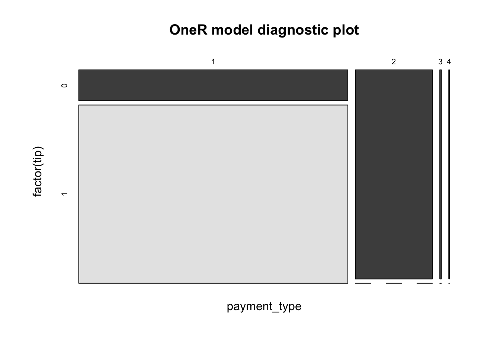

Chapter 3 Model 1: OneR
Split into test and train:
In this model, I decided to use a OneR model to see which of the features would be most “important” in minimizing prediction error. How it works is that for each predictor that I feed the model, it generates “one rule,” and at the end it selects the rule that minimizes error. In this case, I decided to try pickup borough, dropoff borough, passenger count, high fare, season, rate code ID, payment_type, and vendor ID.
- pickup borough/dropoff borough: I thought this may be important in that people whose destinations/origins are different boroughs may have different tipping habits.
- passenger count: my hypothesis was that for rides with higher passenger counts, the tip might be higher. This was somewhat disproved in my EDA, but I wanted to include it in my OneR.
- high fare: I wanted to see whether or not rides with higher fares may tip higher, or if rides with lower fares tip higher proportionally to the fare.
- season: my hypothesis was that maybe rides in the winter (where it’s less convenient to walk/take public transporation) may be tipped higher.
- rate code ID: this represents different types of ride such as “standard” or rides to EWR/JFK. Maybe people who take rides with set fares (like those to the airports) consistently tip at 15-20% because they know exactly what to expect.
- payment type: either credit, cash, no charge, void, or unknown.
- vendor ID: this data represents two different taxi companies. Maybe one has a consistently higher level of service corresponding to better tips for their drivers.
Above, I’ve listed the reasons for why I included specific features. But as a reminder, OneR will only choose ONE of the above predictors as the one that minimizes error. We’ll see which one does the best job when we run the model.
3.1 With payment_type
##
## Call:
## OneR.formula(formula = factor(tip) ~ pickup_borough + dropoff_borough +
## passenger_count + high_fare + season + RatecodeID + payment_type +
## VendorID, data = train_dat)
##
## Rules:
## If payment_type = 1 then factor(tip) = 1
## If payment_type = 2 then factor(tip) = 0
## If payment_type = 3 then factor(tip) = 0
## If payment_type = 4 then factor(tip) = 0
##
## Accuracy:
## 3351 of 3783 instances classified correctly (88.58%)
##
## Contingency table:
## payment_type
## factor(tip) 1 2 3 4 Sum
## 0 432 * 837 * 17 * 7 1293
## 1 * 2490 0 0 0 2490
## Sum 2922 837 17 7 3783
## ---
## Maximum in each column: '*'
##
## Pearson's Chi-squared test:
## X-squared = 2146.6, df = 3, p-value < 2.2e-16 Based on this plot, it seems that there’s only payment type 1 (credit card) that seems to want to tip. I didn’t expect this, but it somewhat makes sense. For example, at a coffee shop, I’m much more likely to tip when paying with a credit card since tapping the “15%” button on the screen is much easier than counting out change if I had paid with cash. Let’s do some EDA regarding payment type to see how this is distributed in the data.
 As we can see, those paying with cash didn’t tip at 15% or higher at all, which was surprising! I guess it’s hard to count out the exact tip by hand. Here, we can also see that the relative frequency of those paying with credit card was much higher than all other payment types combined.
As we can see, those paying with cash didn’t tip at 15% or higher at all, which was surprising! I guess it’s hard to count out the exact tip by hand. Here, we can also see that the relative frequency of those paying with credit card was much higher than all other payment types combined.
Let’s now take a look at the sensitivity, specificity, and overall accuracy of this model on the test data.
## [1] "Overall accuracy:"## [1] 0.8316532## [1] "Test sensitivity and specificity:"## [1] 0.6210191## [1] 13.2 Without payment_type
Since payment_type seems to be the most important predictor, I wanted to see what the next most important predictor would be. So I decided to make another OneR model, leaving out payment_type and see which predictor it would settle on.
##
## Call:
## OneR.formula(formula = factor(tip) ~ pickup_borough + dropoff_borough +
## passenger_count + high_fare + season + RatecodeID + VendorID,
## data = train_dat)
##
## Rules:
## If dropoff_borough = Bronx then factor(tip) = 0
## If dropoff_borough = Brooklyn then factor(tip) = 1
## If dropoff_borough = EWR then factor(tip) = 0
## If dropoff_borough = Manhattan then factor(tip) = 1
## If dropoff_borough = Queens then factor(tip) = 1
## If dropoff_borough = unknown then factor(tip) = 0
##
## Accuracy:
## 2524 of 3783 instances classified correctly (66.72%)
##
## Contingency table:
## dropoff_borough
## factor(tip) Bronx Brooklyn EWR Manhattan Queens unknown Sum
## 0 * 29 60 * 3 1099 83 * 19 1293
## 1 4 * 76 1 * 2305 * 92 12 2490
## Sum 33 136 4 3404 175 31 3783
## ---
## Maximum in each column: '*'
##
## Pearson's Chi-squared test:
## X-squared = 80.442, df = 5, p-value = 6.782e-16## [1] 0.6596067## [1] 0.6673387Interestingly, I have an accuracy of 66% for the training data, and an even higher accuracy of 66.7% for the test data. Compared to an overall frequency of 64.8% for tipped > 15%, this doesn’t seem like that much of an information gain and the test accuracy being higher is a little odd.
Something interesting came up with the OneR function as I was running this. I noticed that for the Brooklyn column, OneR classified it as 1 when from my explorations, I knew that Brooklyn should have been classified as 0 since there were more instances of 0 than 1 in the data.
As we can see, the relative frequencies for Brooklyn were 88 for 0 and 86 for 1, which means that OneR should have classified Brooklyn as 0 instead of 1 as it did in the model. However, OneR said there were 60 instances of 0 and 76 instances of 1 in the data. Why were some of the data points missing?
Now that we’ve removed all the rows with NA, we see the same results that OneR showed in the summary. It turns out this was all because the OneR function has been tossing any rows with NAs in it. This was good to know, and maybe this should have been more clear in the documentation!
Based on the OneR analysis, it seems that dropoff borough is the most important in determining whether or not a rider will tip over 15% on their ride, and it categorizes at 66.7% accuracy. However, we already know that 65% of all rides are classified as over 15% tip so we’re not sure how much information we’re gaining. As we can see from the plot, there are 5 categories (Bronx, Brooklyn, Manhattan, Queens, and unknown borough). Riders who are picked up in Manhattan have the highest rate of tipping over 15%, and riders who are picked up from the Bronx have the lowest rate of tipping over 15%. This made sense intuitively when I looked up the median household income for the different boroughs after making this plot. Highest to lowest median income goes Manhattan, Staten Island, Queens, Brooklyn, then Bronx which is the same order for tipping >15% in this plot.
For each borough, it’s showing the relative frequencies which shows that Manhattan has the most rides. It also shows very few data points for EWR, Bronx, and unknown. It’s possible that those with fewer points would be skewed towards more 0’s than 1’s so that’s something to keep in mind.
## [1] "Test sensitivity and specificity:"## [1] 0.03264095## [1] 0.9938931This model, being very simplistic, has a very low sensitivity and a high specificity. The values are much lower when we exclude payment_type!